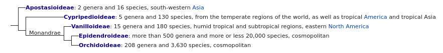
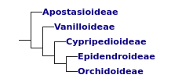

Main article: Taxonomy of the Orchid family
The taxonomy of this family is in constant flux, as new studies continue to clarify the relationships between species and groups of species, allowing more taxa at several ranks to be recognized. The Orchidaceae is currently placed in the order Asparagales by the APG III system of 2009.
Five subfamilies are recognised. The cladogram below was made according to the APG system of 1998. It represents the view that most botanists had held up to that time. It was supported by morphological studies, but never received strong support in molecular phylogenetic studies.
In 2015, a phylogenetic study showed strong statistical support for the following topology of the orchid tree, using 9 kb of plastid and nuclear DNA from 7 genes, a topology that was confirmed by a phylogenomic study in the same year.
A study in the scientific journal Nature has hypothesised that the origin of orchids goes back much longer than originally expected. An extinct species of stingless bee, Proplebeia dominicana, was found trapped in Miocene amber from about 15-20 million years ago. The bee was carrying pollen of a previously unknown orchid taxon, Meliorchis caribea, on its wings. This find is the first evidence of fossilised orchids to date and shows insects were active pollinators of orchids then. This extinct orchid, M. caribea, has been placed within the extant tribe Cranichideae, subtribe Goodyerinae (subfamily Orchidoideae). An even older orchid species, Succinanthera baltica, was described from the Eocene Baltic amber by Poinar & Rasmussen (2017).
Genetic sequencing indicates orchids may have arisen earlier, 76 to 84 million years ago during the Late Cretaceous. According to Mark W. Chase et al. (2001), the overall biogeography and phylogenetic patterns of Orchidaceae show they are even older and may go back roughly 100 million years.
Using the molecular clock method, it was possible to determine the age of the major branches of the orchid family. This also confirmed that the subfamily Vanilloideae is a branch at the basal dichotomy of the monandrous orchids, and must have evolved very early in the evolution of the family. Since this subfamily occurs worldwide in tropical and subtropical regions, from tropical America to tropical Asia, New Guinea and West Africa, and the continents began to split about 100 million years ago, significant biotic exchange must have occurred after this split (since the age of Vanilla is estimated at 60 to 70 million years).
Genome duplication occurred prior to the divergence of this taxon.
Main article: List of natural Orchidaceae genera
The following are amongst the most notable genera of the orchid family: (not verified)
The type genus (i.e. the genus after which the family is named) is Orchis. The genus name comes from the Ancient Greek ὄρχις (órkhis), literally meaning "testicle", because of the shape of the twin tubers in some species of Orchis. The term "orchid" was introduced in 1845 by John Lindley in School Botany, as a shortened form of Orchidaceae.
In Middle English, the name bollockwort was used for some orchids, based on "bollock" meaning testicle and "wort" meaning plant.
Back to Contents